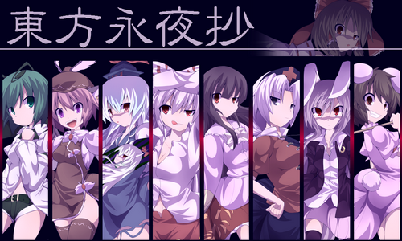
某日，從月球逃到幻想鄉的鈴仙接收到了來自月球的訊息，說人類打算再次入侵月面世界，月之民要來接走鈴仙回去一同抗戰。得知此項消息，永遠亭的輝夜、永琳決定將幻想鄉的月亮藏起來，使用秘術「天文密葬法」製造出假的夜空，並映照出假的月亮，以防止月之使者到來。假的月亮雖然對人類而言無所謂，但卻對於妖怪們有非常大的影響，於是幾個覺得不對勁的妖怪，便拖著親近的人類一起去查明真相。
永夜事件解決後，輝夜公主在宴會上提議玩試膽大會，趁機將眾人騙去襲擊仇敵藤原妹紅……
嗯…這代的故事有點複雜，其實我也沒有完全理解。之前說明過，幻想鄉是個巨大的密室，外來者無法察覺和入侵，永琳把月亮藏起來其實是多此一舉。但「儘管到了應是滿月的日子，但沒有滿月反而出現了初月的異變」，玩家為了解決問題而把時間停在夜晚，停止的僅僅是天體運作，假的月亮照常升上月空，玩到最後會有別的己方角色（靈夢或魔理沙）出來指出玩家才是犯人，然後大打一場。
劇情方面大抵是這樣。然後就是系統方面，本代採用組合方式...
靈夢+紫=結界組
魔理沙+愛麗絲=禁咒の詠唱組
咲夜+蕾米利亞=夢幻の紅魔組
幽幽子+妖夢=幽冥の住人組
以後看到組名就知道是指什麼了～
接著來看人物介紹吧。
莉格露・奈特巴格（リグル・ナイトバグ，Wriggle Nightbug）
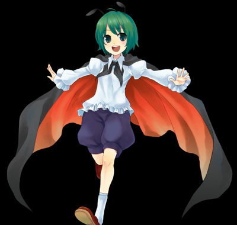
種族：妖怪 (螢火蟲妖怪)
能力：控制蟲
外號：蟲姬、螢火蟲、哩咕嚕、蟑螂、G
外表像少年，其實是個女性。特徵為頭上像蟑螂一樣的觸須和昆蟲翅膀(披風)。腦袋有點笨，因為這個設定的緣故在二創中變成了奇魯諾的好朋友。反正記著在東方中，什麼夜雀啊蟲子啊冰精啊秋姊妹之類存在感不高的角色都有點「笨蛋」的印象。幽幽子對它的評價是「蟲子甚苦」，可能是指不怎麼好吃吧(汗)
米斯蒂姬・蘿蕾拉（ミスティア・ローレライ，Mystia Lorelei）
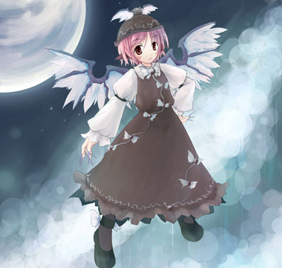
種族：妖怪 (夜雀)
能力：以歌聲使人失常
外號：みすち、夜雀
能把人類的眼變成鳥目(夜盲症)的狀態，奪走其視界(並不是看不到東西，只是只能看到很近的事物)。由射命丸文撰寫的『文花帖』中有報導，她為鼓勵幻想鄉民少吃鳥類,改多吃魚而經營小攤販「燒八目鰻店」，常會用歌聲來招攬客人。據幽幽子在永夜抄的對話表示，夜雀肉的小骨好像滿多的(她果然吃過)。
二創中，夜雀非常害怕幽幽子光臨攤販(會把整間店吃垮)。
因幡 帝（いなば てゐ）
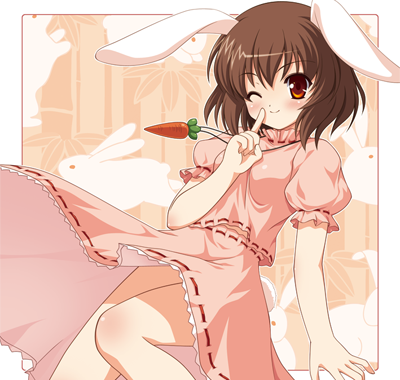

種族：妖怪(妖怪兔)
能力：帶給人類幸運
外號：腹黑兔、詐欺師
因為重視健康而非常長壽，進而成為妖怪兔。是竹林中的兔子中年紀最大最偉大的(雖然外表很蘿)，不時在迷途之竹林中當嚮導，賜與迷途的人幸運，使他們能夠離開竹林。
其實非常狡猾，喜歡惡作劇和說謊，即使受害也不會記取教訓。雖然稱永琳為師父，實際上誰的話都不放在心上。帝第一次來訪永遠亭是在永琳和輝夜隱居永遠亭的數百年後，那時，帝自稱是迷途之竹林的主人，說如果授與她的兔群智慧的話就不會讓人類靠近永遠亭。因此，永琳和輝夜就與兔子們一起住在永遠亭。兔群有名為『兔角同盟』的組織，領袖雖然是鈴仙，不過她無法和未成妖的兔子溝通，所以大部份時候是帝說了算。
以帝為主角，我推薦的MAD是「ってゐ！～えいえんてゐVer～」
鈴仙・優曇華院・因幡（レイセン・うどんげいん・イナバ）
種族：妖怪(妖怪兔)
能力：操縱狂氣
外號：鈴仙、座藥、優曇華、大兔子
因地上人入侵月球而逃到永遠亭，之後拜永琳為師並和永遠亭的眾人一起生活。
她真正的名字只有「レイセン」四個片假名，「鈴仙」是為了避免地上人對其身份起疑而使用，「優曇華院」是永琳賜給她的名諱，昵稱優曇華(月球上特有的一種花的名字)。至於「因幡」，其實凡是兔子都叫因幡……身為永琳的徒弟、與永遠庭兔子的領導人(掛名)，時常負責調度兔子們處理大小事，有時還要拿永琳作的藥到人類之里去賣，生活忙碌，總之是永遠亭最可憐的雜工。
耳朵可以接收其他月兔傳來的訊息，不過很不穩。眼睛是月兔特有的「狂氣之瞳」，人類直視太久就會發狂。永琳把鈴仙匿藏起來一事，基本是為了依靠鈴仙的能力，來暗中得知月之都的情報。由於發射的是子彈，二創中常會給她佩槍，另外因子彈形狀很像「座藥(就是塞在屁眼裡的退燒藥)」，這點也常被惡搞。常常被欺負，大概因為人太好很好使喚吧？特徵為兔耳和領帶西裝+短裙，聽說是初心者最容易萌上的角色。
不用說，代表曲目是「患部で止まってすぐ溶ける～狂気の優曇華院」 XD
八意 永琳 (やごころ えいりん)

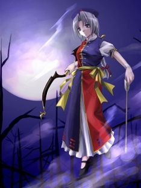
種族：月之民 (月球人)
能力：製作出所有的藥
外號：師匠、藥師、E-RIN
八意家族是月球上的藥師世家，永琳更是其中的天才。與月之都之王的月夜見一起移居月球的前地球人。過去是月之公主輝夜的教師，正因這個原因，在與輝夜獨處時用同輩語氣交談，有外人在的情況則使用敬語，稱輝夜為公主殿下。
在輝夜命令下製作出了能夠令人不老不死的蓬萊秘藥，但事跡敗露，未能阻止公主的永琳感到非常懊悔，決定用一生來守護她。雖是輝夜的部下，能力搞不好在她之上，但為了不犯上，她總是有所保留。身為月之賢者，有著驚人的智慧，在『永夜抄』異變後便一直從事藥師和醫生工作，專負奇難雜症的應診。性格符合醫生的形象，可靠且親切，但在二創中常被塑造成被弟子們(鈴仙和帝)懼怕的嚴厲師父。平時似乎會拿兔子來試藥……
在『永夜抄』的結局當中，曾被幽幽子請來幫妖夢診治變成紅色的眼睛，幽幽子看上永琳的能力而企圖將她永遠留在白玉樓(也就是想將永琳毒死...這女人多會算計)，不過在知道永琳和輝夜一樣是不死的蓬萊人之後，便直嚷著自己遇上了天敵。因為她的「死亡」能力，對於不死之人是完全沒有用的。
外表上，是幻想鄉少數看起來比較成熟的角色，戴著上面有十字、像是護士帽的帽子，衣服是藍紅色各半的道士袍，常用武器是弓箭。
同人裡常出現的「( ﾟ∀ﾟ)o彡゜えーりん！えーりん！」邊叫「永琳」邊揮手的動作，出自一首BGM改編曲「Help me, ERINNNNNN!!」，一方面指永琳擔任醫生救人的工作，一方面是指輝夜沒永琳強，所以要向部下求救……XD
Help me, ERINNNNNN!! （ビートまりお） 東方ライブ映像
蓬萊山 輝夜 (ほうらいさん かぐや)
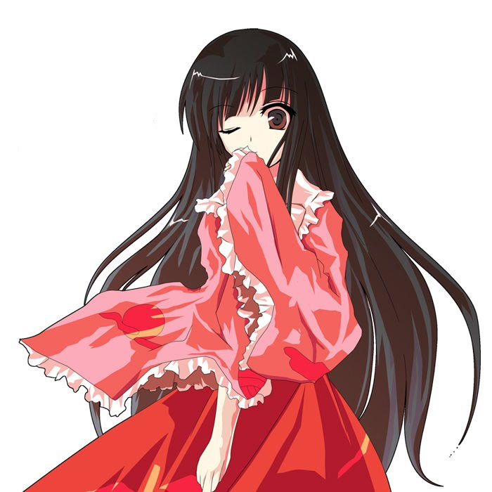

種族：月之民 (月球人)
能力：操縱永遠與須臾的能力
外號：宅女3、蓬萊NEET、NEET姬、家具屋(諧音)、てるよ(日文另讀音)
本來是月球的公主，持有永遠之力，就算死了也可以馬上轉生。因為利用這個力量指使永琳製造蓬萊之藥，被判罪而流放到地上(也就是“竹取物語”，輝夜正是故事中的輝夜姬)。輝夜一個人承擔罪行使永琳得到赦免，她自己也被赦免，但在接回月球的途中，和永琳合謀殺了其他使者，逃到永遠亭，從此過著隱居的生活。
因為是逃亡之身，足不出戶，常被同人設定為家裡蹲。『永夜抄』中永琳說「輝夜本來就是經常閉在家裡」，但輝夜本人聲稱「是被永琳困在家裡」。現正在主辦「月都萬象展」(有關月之都的博覽會)等，積極的活動著。
恩...基本上就是個個性極度任性天兵的大小姐，但是，卻有為袒護部下承擔罪行如此坦蕩的一面，我對她的感覺可說是十分微妙(笑)
形象：足不出戶、成日怠惰上網的NEET姬。
永琳：「去工作！」輝夜：「我拒絕！」

NEET輝夜姬MAD：「手書き」 ゆっくりでいいさ
聲音很奇怪？因為這是用翻譯機唱的……
NEET姬的代表曲，我推薦「ひれ伏せ愚民どもっ！」
orzorzorzorzorzorzorzorzorzorzorzorzorzorzorzorzorzorzorzorzorzorzorzorz
上白澤 慧音 (かみしらさわ けいね)
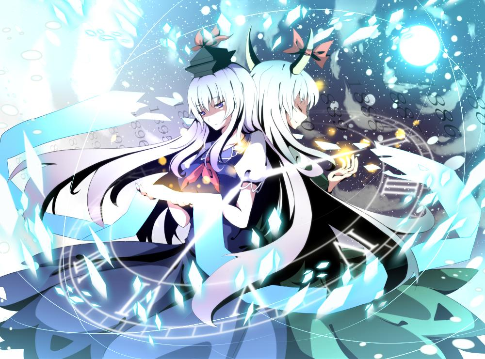
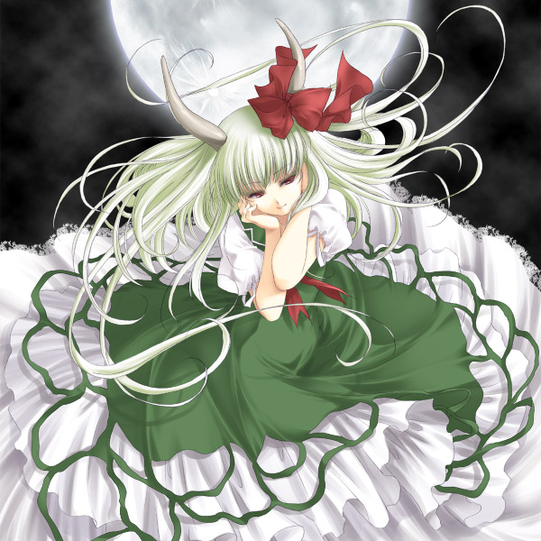
種族：半獸 (人獸種白澤)
能力：（人類型態時）吞食（隱藏）歷史、（白澤型態時）創造歷史。
外號：乳牛(因為長的疑似牛角，莫名的多了巨乳的設定)、慧音老師
雖然出生時並不是獸人，原為人類的她是經過某些事情後才會變成半白澤。平時一直維持着人類的姿態，一到滿月之夜就會化身成為白澤，長出角和尾巴，皮膚也會改變顏色。十分親近人類，現在人間之里開辦私塾教育村中的小朋友，遇上忘了做功課的學生會用頭撞他(「頭槌」)。被賞了記長角狀態的頭槌稱作「Caved」，因為會撞出兩個洞(抖)。據說她上課不太有趣，討厭不打招呼、沒禮貌的人，應該就像個負責任的頑固派教師吧。但其實主要工作是編攥歷史，滿月時則會離開人群。
永夜抄的Extra關卡中化身為白澤(又稱EX慧音)，為保護某人而和玩家對戰，雖然對話中未表示是誰，但妹紅在其後登場了，所以一般認為慧音是為了保護妹紅，兩人的關係應該很親密。
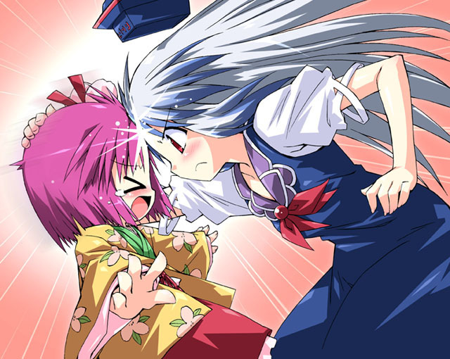
工作是寺子屋的老師.
形象：妹紅的保護者？
藤原 妹紅 (ふじわら の もこう)
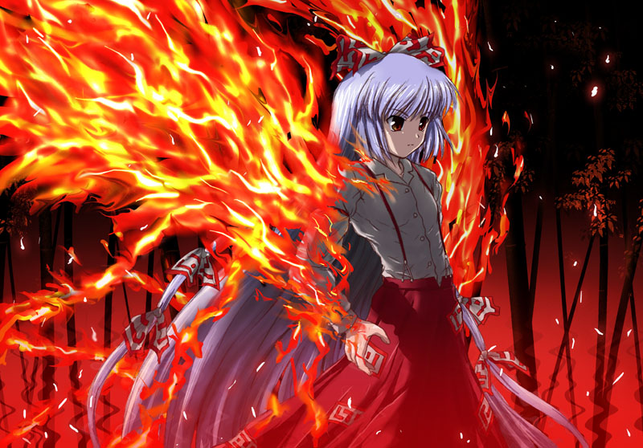
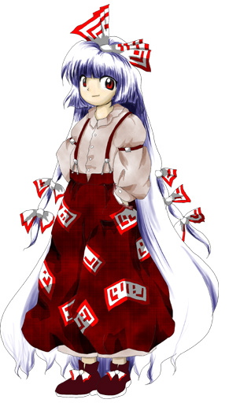
種族：人類
能力：不老不死 (吃了蓬萊藥後得到)
出生在貴族世家，可是從小一直被冷落，後來得知父親向輝夜求婚，但被輝夜的難題羞辱後，決心為父親報仇。(推測其父應該為「藤原不比等」)
在「輝夜姬」受天皇之命把蓬萊之藥丟進火山的地方，把蓬萊之藥搶奪過來並服用了，自此變成不滅之身。但不會成長的身體會引起周圍的人的懷疑，因此不能在同一個地方生活太久，輾轉流落到深山(幻想鄉)之前一直也是過著居無定所的生活。於竹林找到輝夜之後，知道輝夜就跟自己一樣居無定所且不老不死，使她對輝夜抱有同病相憐的感覺，但是她仍然是十分痛恨輝夜。現在躲在永遠亭附近的竹林裡，想要伺機偷襲輝夜。
有著操控火焰的能力，年齡大約1300歲，以前的外貌是黑色短髮，現在為白色長髮+赤眼。
說她伺機想襲擊輝夜或許不是很恰當，以本人的說法，是輝夜老派人來找碴才對。從『永夜抄』對話中能發現其實人還不錯，也常和慧音兩人將在生病的人類送到永遠亭去。在『儚月抄』的相關資料有提到，她在服下蓬萊之藥後，前三百年過著非常痛苦的日子，之後三百年過著殘殺妖怪的日子，再接下來的三百年，心灰意冷的隱居起來，最後在幻想鄉巧遇輝夜，從此過著彼此廝殺的生活直至現今(反正兩人都死不了，只能永遠打下去)。或許是活了很久的關係，講話很老成，用詞遣字也意外的文雅。但在二創中不知為何常被塑造成不良，也許是手插著吊帶褲的形象比較男性化的緣故。
和輝夜是猿犬之交，見面就打
永夜抄是我最初接觸的作品，所以對這代懷有比較特別的感情
裡頭有我很喜歡的輝夜，也有我很討厭的腹黑兔 =..=
雖然輝夜永琳、妹紅白澤才是官配，最近對輝夜x妹紅的二創很感興趣。
下一篇應該是花映塚？突然想起之前忘了把緋想天排出來……
[ 推薦閱讀 ]
東方相關的文章目錄 - 2008